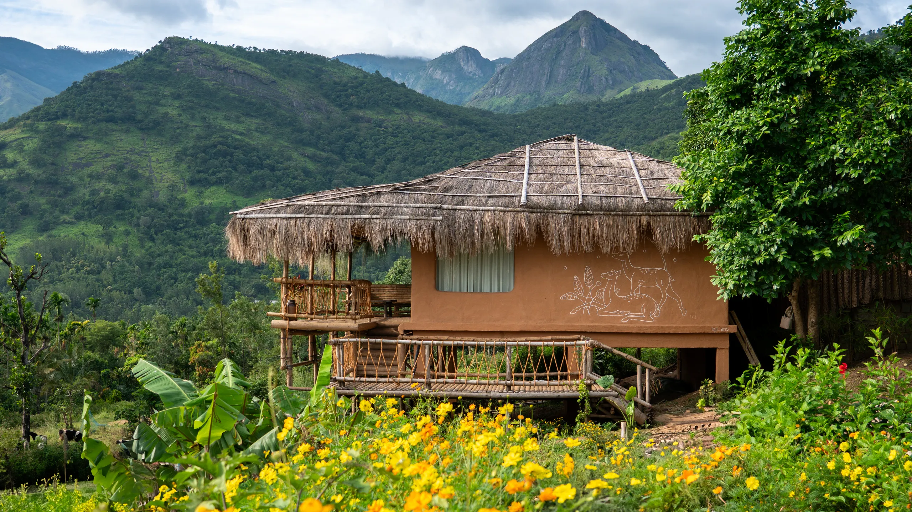
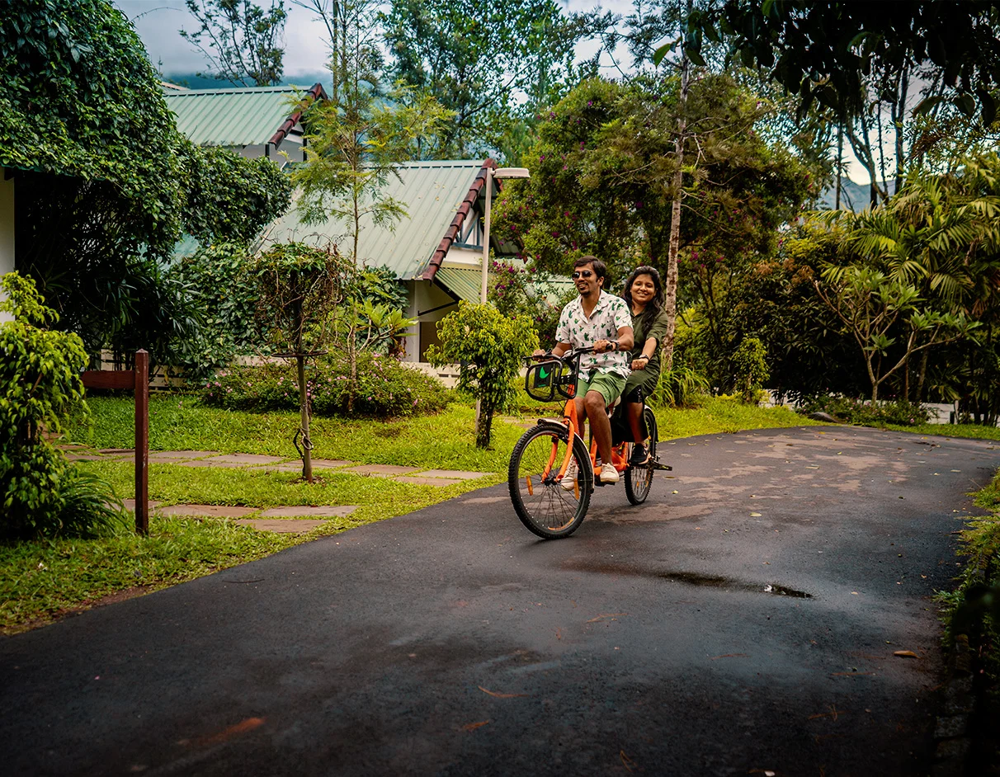
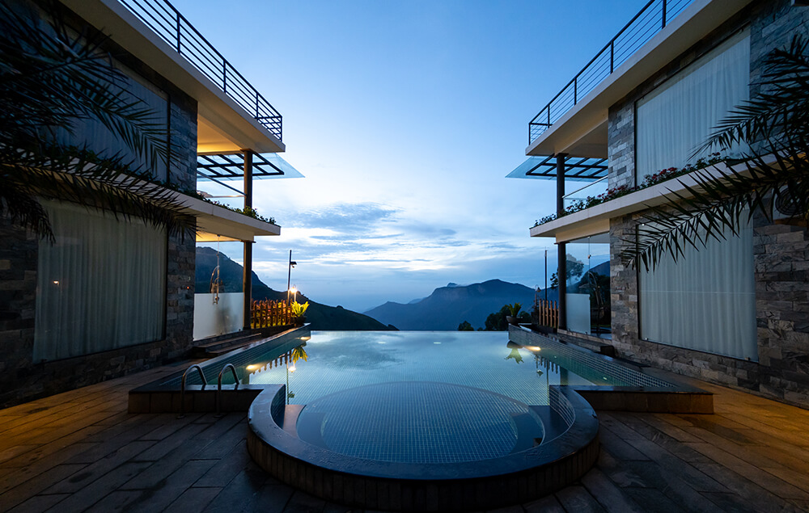

Thoughtful Welcome
Clear, warm, and helpful communication from your very first enquiry through the duration of your stay.

MISTY FERN · MUNNAR, KERALA
Where misty mornings meet serene hills — your idyllic setting for a peaceful family stay in Munnar.
ABOUT MISTY FERN
Welcome to Misty Fern, a peaceful retreat nestled in the beautiful hills of Munnar, Kerala. Surrounded by lush greenery, misty mountains, and refreshing natural beauty, Misty Fern offers a welcoming setting for families looking to spend quality time together and create unforgettable memories during their peaceful family stay in Munnar.
As a family-friendly resort in Munnar, Misty Fern is designed to make your getaway feel relaxing, comfortable, and memorable. Whether you are planning a family holiday, a weekend escape, or a refreshing break from your daily routine, discover a place where you can slow down and enjoy the quiet beauty of the hills.
Explore our sample rooms, discover your preferred stay option, and send an enquiry directly to plan your visit. At Misty Fern, every family getaway is an opportunity to reconnect, relax, and experience the serene charm of a peaceful family stay in Munnar.

✨ “Slow mornings & forever memories · Peaceful family stay in Munnar” Where nature meets family.
Where nature meets family.
OUR HERITAGE & VISION
Every memorable journey begins with a feeling — the desire to escape the busy world, breathe in the fresh mountain air, and spend meaningful moments with the people who matter most. Inspired by the peaceful beauty of Munnar, Kerala, Misty Fern welcomes families to experience the charm of the hills and the comfort of a relaxing getaway.
Surrounded by lush greenery, mist-covered landscapes, and the gentle beauty of nature, Misty Fern was envisioned as a welcoming retreat where families can slow down, reconnect, and create memories together. From peaceful mornings to relaxing evenings, every moment offers an opportunity to appreciate the simple joys of being away from everyday routines.
Our story is rooted in the idea that a holiday should be more than just a stay. It should be an experience filled with comfort, togetherness, and the refreshing atmosphere of the mountains. As a family-friendly resort in Munnar, Misty Fern invites you to discover a peaceful setting for your next family holiday, weekend escape, or special getaway.
Whether you are exploring the beauty of Munnar or simply enjoying time with your loved ones, let Misty Fern be part of your journey.
Misty Fern — your peaceful family stay in Munnar, where beautiful surroundings become lasting memories.
LIFE AT MISTY FERN
Curated glimpses into your peaceful family stay in Munnar — where cloud-topped peaks, emerald slopes, and quiet hours bring you closer together.
 Misty Mornings
Misty Mornings
Breathe in crisp mountain air and sip fresh Kerala tea while the misty valleys slowly wake below your balcony.
 Emerald Trails
Emerald Trails
Leisurely family strolls through panoramic tea hills, accompanied by cool breezes and inspiring mountain vistas.

Pure SerenitySpacious lawns, safe family areas, and tranquil open grounds that let adults recharge and kids play freely.
THE HEART OF HOSPITALITY
Thoughtful touches and hospitality principles tailored to ensure a relaxed, memorable, and peaceful family stay in Munnar.
Clear, warm, and helpful communication from your very first enquiry through the duration of your stay.
Authentic hill country experiences, refreshing mountain breezes, and quiet garden walks with the family.
Comfortable, peaceful spaces crafted to help families relax, recharge, and reconnect at their own pace.
 🌿 “Framed by tea hills & quiet skies”
🌿 “Framed by tea hills & quiet skies”
EXPLORE MUNNAR
Misty Fern is positioned amidst Munnar’s gentle climate and iconic landscape. From tea gardens to scenic lookouts, enjoy a tranquil starting point for your peaceful family stay in Munnar.
Ask about the locationA KERALA STAY, AT YOUR PACE
Ready to plan your peaceful family stay in Munnar? Send an enquiry to check dates, rooms, and details.